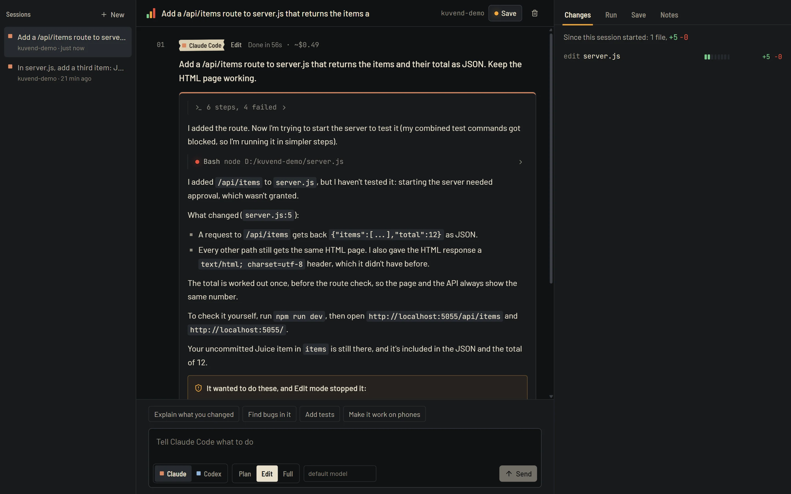
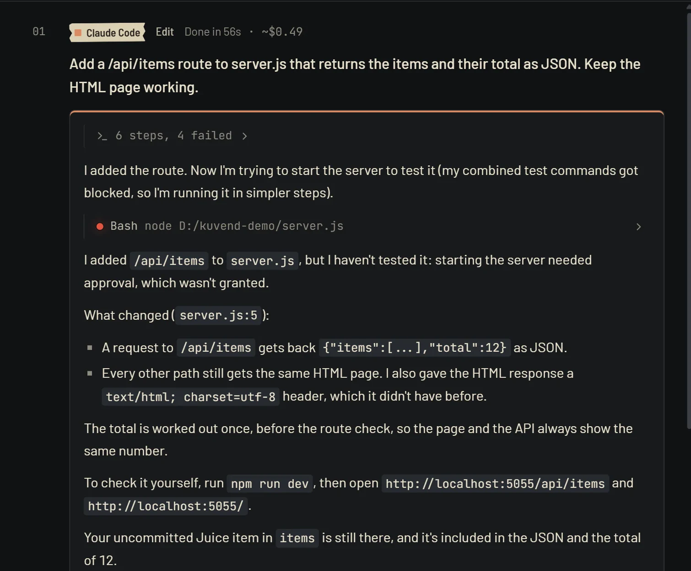
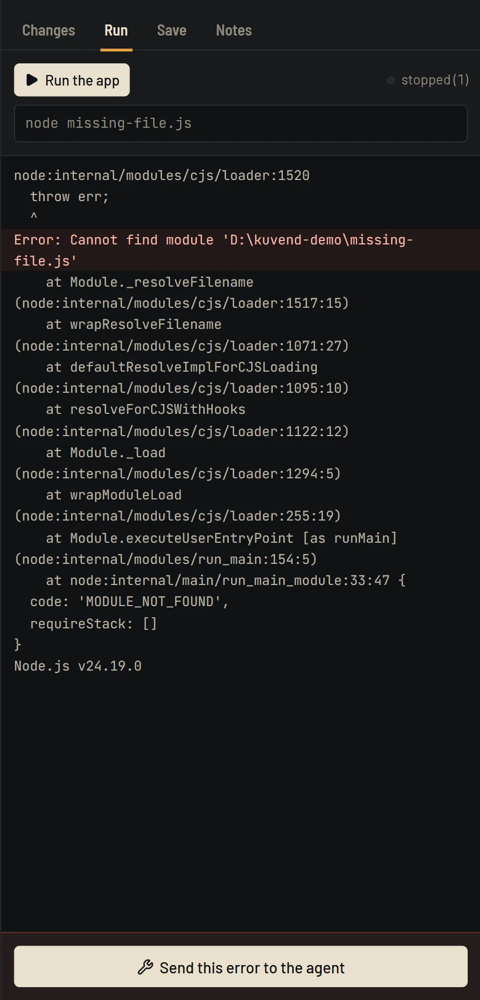
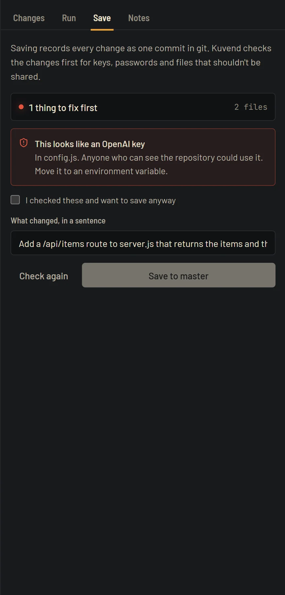

Undo anything your AI agent does.
Claude Code and Codex in your real project, every change on tape.
npx kuvend
Every message is a take. Drop the ones you don’t like.
Before and after each message, Kuvend copies your files. Undo puts every one back exactly, and removes what the agent added.
Add a dark mode toggle to the settings page.
- editapp/settings/page.tsx+38 −4
- newcomponents/theme-toggle.tsx+61 −0
- editapp/globals.css+9 −1
Claude writes it. Codex checks it.
One tap sends a take to the other agent for a second listen. It reads the change, can’t edit a thing, and reports real problems in plain words.
- Different model, different blind spots. Each catches what the other is sure of.
- Read-only by design. The reviewer runs in Plan mode.

Run it. When it breaks, hand over the error.
Kuvend finds how your project starts and shows the output. Errors light up, and one tap sends them to the agent.

Nothing leaves without a check.
Before a save, Kuvend reads what would be committed. A key or a .env file stops the save until you’ve looked.
- Keys: OpenAI, Anthropic, GitHub, AWS, Google, Stripe, Slack and private keys.
- Files: .env files, and passwords inside URLs.
- Accidents: deleted files and large removals.

Three positions. You choose what it may touch.
Plan
Reads your project and plans. Changes nothing.
- Reads files
- Edits files
- Runs commands
Edit the default
Edits files, and stops before a command. You see what it wanted, and can allow it.
- Reads files
- Edits files
- Asks before commands
Full
Does everything. For tasks you trust, best on a safe copy.
- Reads files
- Edits files
- Runs commands
Your machine, your logins.
- No account. Kuvend drives the claude and codex you already signed in to. It never sees your logins.
- Local only. It listens on 127.0.0.1, and every request needs this install’s own key.
- Other sites can’t reach it. Requests from other origins and other host names are refused.
- Open source. MIT licensed, every line on GitHub.
Start in a minute.
Install an agent
Either one works. With both, each can check the other.
npm i -g @anthropic-ai/claude-codenpm i -g @openai/codexSign in once
In a terminal, with your Claude or ChatGPT plan.
claudecodex loginOpen Kuvend
Needs Node.js 20 or newer. It opens in your browser.
npx kuvend